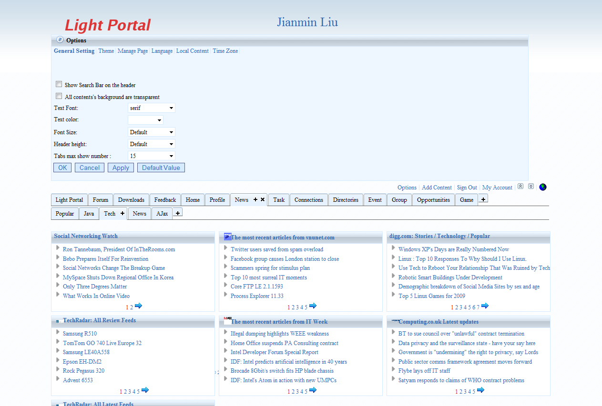
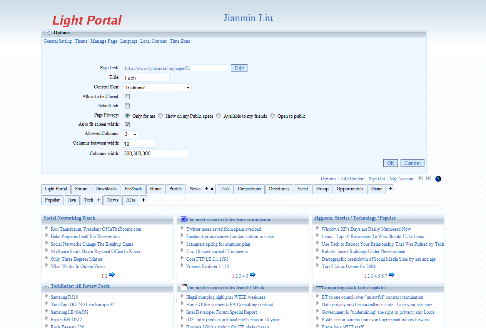
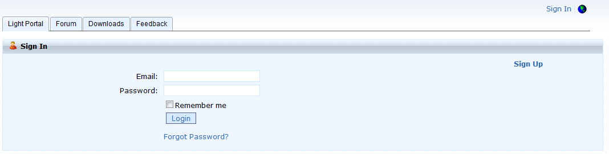

Introduction
to the Light Portal Framework
An
ajax and java based
open source portal framework
Feb 3, 2009 by Jianmin Liu
Abstract
Light Portal is an Ajax and Java based Open Source Portal and Social
Collaboration Software which can be seamless plugged in to any Java Web
Application or as an
independent Portal Server.
Why supports Plug in?
Light Portal framework is designed for both as an independent Portal
application and plugged in to any existing Java EE Web Application. On
the current status, there are too many existing Java EE web
applications, it's very
hard to integrate existing applications with most portal product. So
Light Portal could be one of your options to integrate existing web
applications with a portal product.
Why Ajax?
The reasons why Light Portal framework chose Ajax are:
● Performance is good. As we all know, Ajax use asyn way to communicate
with server. It's a real benefit when one page contain many portlets,
each portlet use ajax individually communicate with server/third party
resources, it doesn't
need to refresh whole page.
● Ajax also means rich user interface, Light Portal can support more
interactive an rich user interface by adopting ajax.
Benefits of
Light Portal framework
● Ajax and Java based
Portal framework
.
● Support JSR 168 Portlet
API
programming model .
● Built in with social network
functions, includes user profile, connections, groups, plus over 50
portlets pre-bundled.
● Can be seamless plugged
in to any
Java EE Web Application or as an independent web application.
● Integrated with Spring
Portlet MVC, MyFaces, WebWork 2.
● Supports turn on and
turn off
feature.
● Supports multiple mobile browsers,
such as iPhone, Opera mini etc.
● Supports Personalized pages for all
users, end users can easily add, edit or delete page or sub page.
● Supports Portal Role
based
Authorization.
● Supports
Internationalizaiton (i18n).
●Contains multiple pre-built themes
and UI window appearances, also supports customization.
● Portlet supports
VIEW,EDIT and HELP
mode, also supports custom portlet modes.
● Portlet's Window states
include
NORMAL, MINIMIZED, MAXIMIZED, also supports custom portlet window
state.
● Portlet's Window
supports functions
include minimize, maximize, close, refresh, auto refresh, drag and
drop.
● Portlet can be
configured to refresh
other Portlets within the same page .
Light Portal Screenshots


Technologies
and Frameworks used by Light Portal framework
Light Portal Framework
isn't
created from scratch, it is build based on many other open source
frameworks. From Ajax part, Light used Prototype frameworks.
On the Java part, Light used Jdk1.5, Servelt, Portlet, Rome, Castor,
Spring, Hibernate
technologies or frameworks.
- Prototype
is a
JavaScript framework that aims to ease development of dynamic web
applications.
- Rome
is an open source
(Apache license) set of Atom/RSS Java utilities that make it easy to
work in Java with most syndication formats.
- Castor is an Open Source data binding
framework for Java. It provides Java-to-XML binding.
- Spring
is a leading
full-stack Java/J2EE application framework.
- Hibernate
is an
object/relational persistence and query service for Java.
Setup Light Portal framework
See more details at Getting
Started.
Configuration Light
Portal framework
Security configuration
Developers
can configure
Portal security using portal-security.xml. The following xml is a
sample of portal-security.xml.
<?xml
version="1.0"
encoding="UTF-8"?>
<portal-security
xmlns:xsi="http://www.w3.org/2001/XMLSchema-instance"
xsi:noNamespaceSchemaLocation="portal-security.xsd">
<application>
<defaultLocale>en</defaultLocale>
<allowChangeLocale>true</allowChangeLocale>
<reCreateTable>false</reCreateTable>
</application>
<role>
<name>role_guest</name>
<allowLookAndFeel>false</allowLookAndFeel>
<allowLayout>false</allowLayout>
<allowAddTab>false</allowAddTab>
<allowAddContent>false</allowAddContent>
<allowSignIn>true</allowSignIn>
<allowTurnOff>false</allowTurnOff>
<title></title>
<theme>theme4</theme>
<users>
<user>
<name>default@lightportal.org</name>
<password>default</password>
<firstName>default</firstName>
<middleName></middleName>
<lastName></lastName>
<email>default@lightportal.org</email>
</user>
</users>
</role>
<role>
<name>role_user</name>
<allowLookAndFeel>true</allowLookAndFeel>
<allowLayout>true</allowLayout>
<allowAddTab>true</allowAddTab>
<allowAddContent>true</allowAddContent>
<allowSignIn>true</allowSignIn>
<allowTurnOff>false</allowTurnOff>
<title>Member's
Portal</title>
<theme>theme5</theme>
<users>
<user>
<name>admin@lightportal.org</name>
<password>admin</password>
<firstName>admin</firstName>
<middleName></middleName>
<lastName></lastName>
<email>admin@lightportal.org</email>
</user>
</users>
</role>
<role>
<name>role_admin</name>
<allowLookAndFeel>true</allowLookAndFeel>
<allowLayout>true</allowLayout>
<allowAddTab>true</allowAddTab>
<allowAddContent>true</allowAddContent>
<allowSignIn>true</allowSignIn>
<allowTurnOff>false</allowTurnOff>
<title>Admin's
Portal</title>
<theme>theme5</theme>
<users>
<user>
<name>admin@lightportal.org</name>
<password>admin</password>
<firstName>admin</firstName>
<middleName></middleName>
<lastName></lastName>
<email>admin@lightportal.org</email>
</user>
</users>
</role>
</portal-security>
Light
Portal use
role_guest as the default role and default@lightportal.org as default
user, any user who didn't sign in will use user
default@lightportal.org's
authorization. User who signed in aready will use
role_user's authorization. Developers can add new roles
and initial
users also.
Portlet configuration
Developers have to configure both portlet.xml and portlet-config.xml,
portlet.xml is the JSR standard configuration file, portlet-config.xml
is used by Light framework to configure portlet instance's UI's
function and parameter, and the path 's prefix name should be same as
portlet name configured in portlet.xml.
<portlet>
<name>searchPortlet</name>
<path>/searchPortlet.lp</path>
<title>portlet.title.search</title>
<icon>/light/images/search.gif</icon>
<url/>
<tag>portlet.tag.title.search</tag>
<language>all</language>
<refreshMode>true</refreshMode>
<editMode>true</editMode>
<helpMode>false</helpMode>
<configMode>true</configMode>
<autoRefreshed>false</autoRefreshed>
<periodTime>0</periodTime>
<allowJS>true</allowJS>
<pageRefreshed>false</pageRefreshed>
</portlet>
<portlet>
<name>cnnTopStories</name>
<path>/rssPortlet.lp</path>
<title>CNN - Top
Stories</title>
<icon>http://i.cnn.net/cnn/.element/img/1.0/logo/cnn.logo.rss.gif</icon>
<url>http://www.cnn.com/?section=cnn_topstories</url>
<tag>portlet.tag.title.news</tag>
<subTag>portlet.tag.title.popular</subTag>
<refreshMode>true</refreshMode>
<editMode>true</editMode>
<helpMode>false</helpMode>
<configMode>true</configMode>
<autoRefreshed>false</autoRefreshed>
<periodTime>0</periodTime>
<allowJS>false</allowJS>
<pageRefreshed>false</pageRefreshed>
<showNumber>6</showNumber>
<parameter>
<name>feed</name>
<value>http://rss.cnn.com/rss/cnn_topstories.rss</value>
</parameter>
</portlet>
Portal layout Configuration
Developers
can configure
Portal layout using portal-layout.xml. The following xml is a sample
of portal-layout.xml.
<portalUser role="role_guest">
<portalTab>
<title>tab.title.home</title>
<defaulted>true</defaulted>
<closeable>false</closeable>
<editable>false</editable>
<moveable>false</moveable>
<allowAddContent>false</allowAddContent>
<widths>700,300</widths>
<between>10</between>
<portletWindow>PortletWindow2</portletWindow>
<portlets>
<portlet>
<name>infoPortlet</name>
<column>0</column>
<row>0</row>
<notCloseable>true</notCloseable>
<noEditMode>true</noEditMode>
<noConfigMode>true</noConfigMode>
</portlet>
<portlet>
<name>userPortlet</name>
<column>1</column>
<row>0</row>
<notCloseable>true</notCloseable>
<noEditMode>true</noEditMode>
<noConfigMode>true</noConfigMode>
</portlet>
<portlet>
<name>peopleDirectoryPortlet</name>
<column>1</column>
<row>1</row>
<notCloseable>true</notCloseable>
<noEditMode>true</noEditMode>
<noConfigMode>true</noConfigMode>
</portlet>
</portlets>
</portalTab>
</portalUser>
<portalUser role="role_user">
<portalTab>
<title>tab.title.personal</title>
<defaulted>true</defaulted>
<closeable>false</closeable>
<editable>true</editable>
<moveable>true</moveable>
<allowAddContent>true</allowAddContent>
<widths>280,420,300</widths>
<between>10</between>
<portletWindow>PortletWindow2</portletWindow>
<portlets>
<portlet>
<name>profilePortlet</name>
<column>0</column>
<row>0</row>
</portlet>
<portlet>
<name>myMessagePortlet</name>
<column>0</column>
<row>1</row>
</portlet>
<portlet>
<name>friendsPortlet</name>
<column>0</column>
<row>2</row>
</portlet>
<portlet>
<name>calendarPortlet</name>
<column>1</column>
<row>0</row>
</portlet>
<portlet>
<name>blogPortlet</name>
<column>1</column>
<row>1</row>
</portlet>
<portlet>
<name>todoListPortlet</name>
<column>1</column>
<row>2</row>
</portlet>
<portlet>
<name>myPicturePortlet</name>
<column>2</column>
<row>0</row>
</portlet>
<portlet>
<name>notePortlet</name>
<column>2</column>
<row>1</row>
</portlet>
<portlet>
<name>bookmarkPortlet</name>
<column>2</column>
<row>2</row>
</portlet>
</portlets>
</portalTab>
</portalUser>
<portalUser
role="role_admin">
<portalTab>
......
</portalTab>
</portalUser>
Personalized Look and Feel
Currently
Light
Portal framework supports many options to personalize look and feel, if
you want to
change it, click the options menu on the top right corner. The options
portlet window will show on the top of regular page,
you can configure the followings:
● General setting, such as text font, text color, transparent
backgroud etc.
● Theme, Light Portal includes 8 built-in
themes, developers can also add more customized themes.
● Manage Page, such as edit title, configure page
friendly URL, privacy setting etc.



Add Page/Sub Page
Light
portal support
multiple pages/sub pages, you can click "Add Page" Icon on the right
side of your
page header to add your own page. After
you add a new page, System will create a empty page, it contains 3
columns by default, you can add contents in this
page by click "Add Contents" mueu. You can change its title or other
properies by click "Options/Manage Page" menu.
Add
contents
Light
Portal support to be
added contents easily. You can click Add content menu, first you
choose which column you want to add at, then select one of
pre-registered portlets or add your favourite RSS feed. When you want
add your favourite RSS feed, you can click "Add My Feed" then
input your Feed URL or import from OPML file.

Sign
In/Sign Up
This
function is for an
independent application, if you want to integrate Light Portal with
existing
Java EE web application, please see this
document.
If you
want to be able to
access your personalized Light Portal page from any computer and also a
public url for your profile, you can
sign in (need sign up first) with your user id and a password.


Personalized Page
After sign up, system will create a
default personalized page, end user can
add/delete contents based on personal interests and also add more pages.
Public profile
By default, every user has same layout for user's public profile, but
user can configure any personalized page to be public profile page,
user can also hide personal information by setting privacy.

My Account
users can maintain personal information throught "my account" menu,
such as change display name, change password, basic informaiton,
personal interests, privacy setting etc.
About the
author
Jianmin
Liu is the founder and core developer of Light Portal project. He is a
Sun
Certified Enterprise Architect and holds several other certifications
from Sun and Microsoft whose areas of interests include Web
Application architecture design and development with new
technologies. He works at Seattle, WA currently, you can contact
him at liujianmin@gmail.com
or http://www.lightportal.org/space/liujianmin.